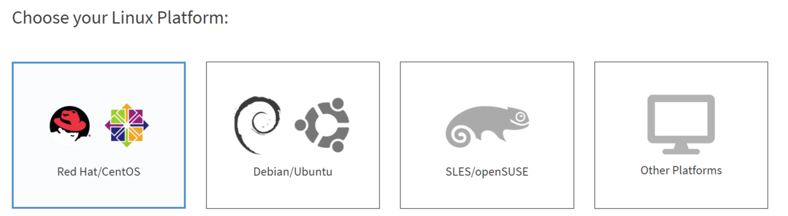
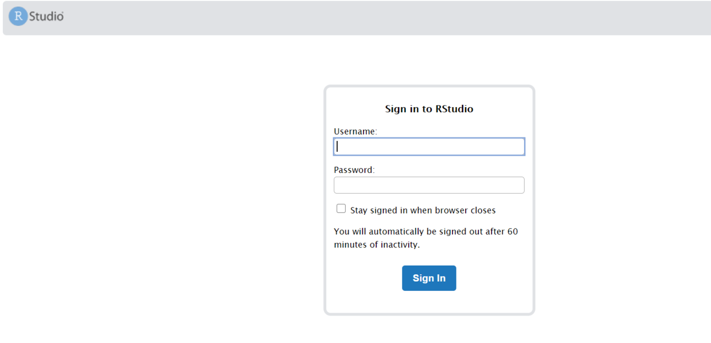
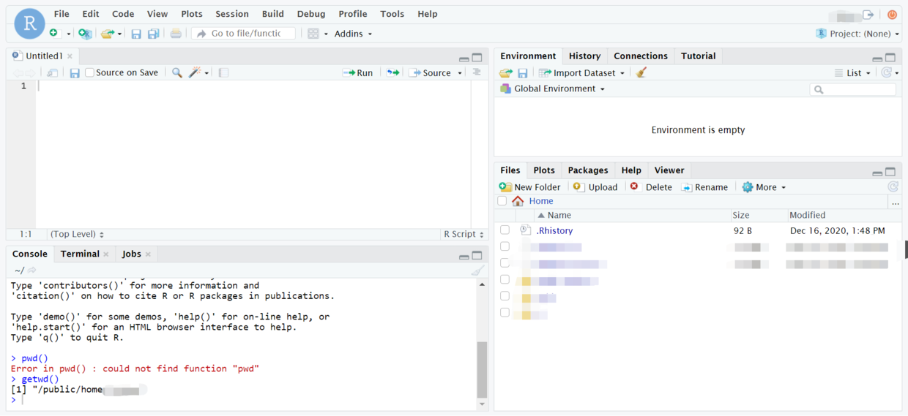

最近在处理服务器上的R，顺便就想往服务器上装一个RStudio。因此就有了本文记录一下安装及配置的过程。我们的服务器是CentOS 7系统，其他发行版安装过程其实也大同小异。
RStudio-server 安装
在RStudio-server的官网上选择对应发行版的RStudio-server进行下载
https://rstudio.com/products/rstudio/download-server

Red Hat/CentOS 6-7
如果是Red Hat/CentOS 6-7的话，按照以下命令进行安装
1 | wget https://download2.rstudio.org/server/centos6/x86_64/rstudio-server-rhel-1.3.1093-x86_64.rpm |
CentOS 8
1 | wget https://download2.rstudio.org/server/centos8/x86_64/rstudio-server-rhel-1.3.1093-x86_64.rpm |
安装完成后，检查rstudio-server 是否运行
1 | ps -aux | grep rstudio-server |
看到rstudio-server 在服务器上运行后，可以通过个人的终端在网页上进行连接。默认在8787端口。
1 | http://[$IP]:8787/ |
服务器的IP地址可以通过ifconfig 命令查询
上述操作顺利的话，就可以在个人终端的网页打开如下界面

输入自己在服务器上的账号密码即可登录。
登录后rstudio的工作目录与登录账号的家目录一致。

接下来，就可以在服务器上使用RStudio了。
RStudio-server 常用管理命令
以下命令都需要有root权限才可以执行
rstudio-server control
1 | # 检查安装是否正常 |
session control
1 | # 列出正在使用的sessions |
offline/online
当服务器需要维护时，例如更改服务器配置或更新RStudio，也可以让rstudio-server offline
1 | sudo rstudio-server offline |
RStudio-server 配置
RStudio-server通过在两个配置文件中添加自定义语句进行配置（默认情况下，这两个配置文件可能不存在，则需要自己创建，但我安装后是存在的）
1 | /etc/rstudio/rserver.conf |
更改网络端口和地址
默认情况下，RStudio server的连接端口是8787，可以通过在rserver.conf中更改
1 | # In /etc/rstudio/rserver.conf |
默认情况下，RStudio绑定到地址0.0.0.0（接受来自任何远程IP的连接）。可以使用www-address条目修改此行为。例如：
1 | www-address=127.0.0.1 |
在更改/etc/rstudio/rserver.conf后，都需要重启server以更改配置
1 | sudo rstudio-server restart |
外部库
通过修改rsession-ld-library-path 添加系统的库路径作为外部库以供RStudio server调用。有时候R需要依赖系统的一些库的时候，就可以添加上系统库的路径让R也可以调用到，例如：
1 | rsession-ld-library-path=/opt/local/lib:/opt/local/someapp/lib |
更改RStudio-server使用的R版本
有时候系统上会装了多个版本的R，当我们想使用某个特定版本的R的时候就可以通过修改配置文件实现，例如
1 | rsession-which-r=/usr/local/bin/R |
限定使用的用户组
通过修改auth-required-user-group可以限制能够使用RStudio-server的用户组，例如
1 | auth-required-user-group=rstudio_users |
以下内容在/etc/rstudio/rsession.conf 中修改
超时设定
默认情况下，如果用户超过2个小时没有发出命令，RStudio会将该用户的R session挂起到磁盘，这样他们就不再消耗服务器资源（下次用户尝试访问服务器时，他们的会话将被还原）。 可以使用session-timeout-minutes设置更改超时（包括通过指定值为0来禁用它）。 例如：
1 | session-timeout-minutes=30 |
但是当用户在运行代码时是不会因为超时而被挂起的。
更改R包安装地址
通过修改r-libs-user可以更改用户的默认R包安装地址。这样的好处是确保最终用户安装的R包在路径中没有R版本号。 反过来，这使管理员可以在服务器上升级R版本而不用重置用户安装的软件包（如果安装的R包位于R版本派生的目录中，则会发生这种情况）。例如：
1 | r-libs-user=~/R/packages |
更改默认镜像
例如
1 | r-cran-repos=https://mirrors.nics.utk.edu/cran/ |
Ref:
完。